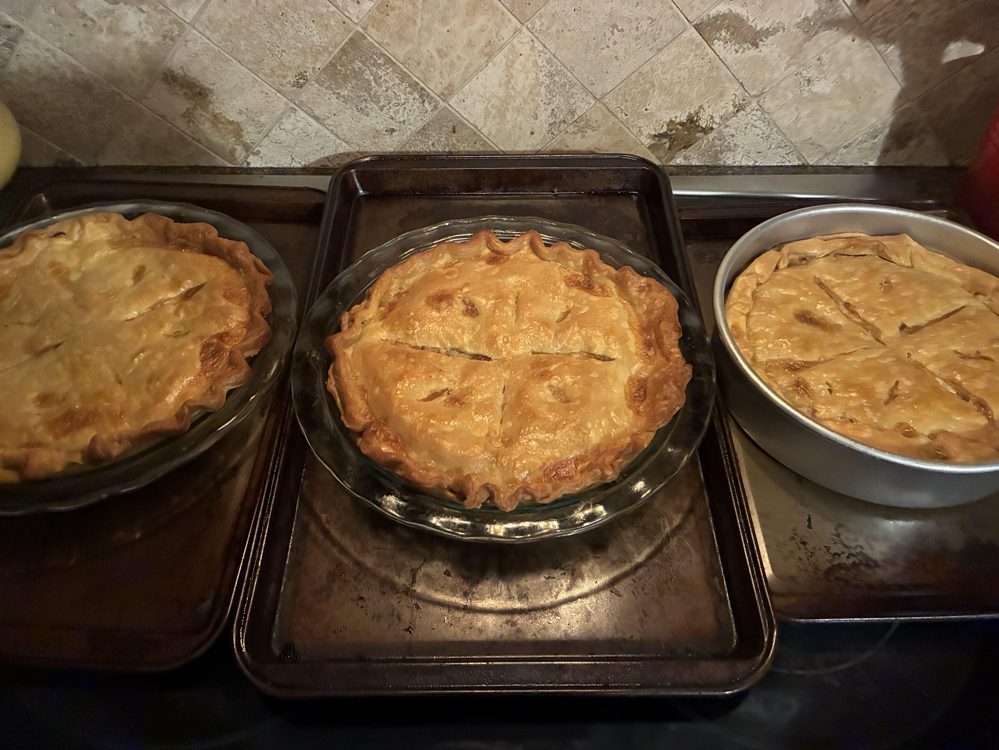

Chicken Pot Pie
Home

An easy recipe. Made with premade Pillsbury pie crusts.
Ingredients to Buy:
- approx. 1lb of cubed raw chicken
- 1 box, 2 Pillsbury pie crusts
- 1 cup sliced carrots
- 1 cup frozen peas
- 1/2 cup sliced celery
- 1/3 cup butter
- 1/3 cup chopped onion
- 1/3 cup all purpose flour
- 1/2 teaspoon salt
- 1/4 teaspoon pepper
- 1/4 teaspoon celery seeds
- 1 and 3/4 cups of chicken broth
- 2/3 cup milk
Directions:
- Preheat oven to bake 425°F
- Add chicken, celery, carrots, and peas to a pan. Barely fill pan to cover ingredients with water. Bring to a boil, and boil for 15 minutes. Drain water.
- Meanwhile, melt butter in a separate saucepan over medium heat. Add onion; cook until soft and translucent, 5 to 7 minutes. Stir in flour, salt, black pepper, and celery seeds.
- Slowly stir in chicken broth and milk.
- Reduce heat to medium-low; simmer until thick, 5 to 10 minutes. Set aside off heat.
- Place 1 crust in a 9-inch pie plate; add chicken and vegetables to the crust. Pour hot broth mixture over top.
- Cover pie with top crust, seal the edges, and trim any excess dough. Make several small slits in top crust to allow steam to escape.
- Bake in the preheated oven until pastry is golden brown and filling is bubbly, 30 to 35 minutes.
- Cool for 10 minutes before serving.